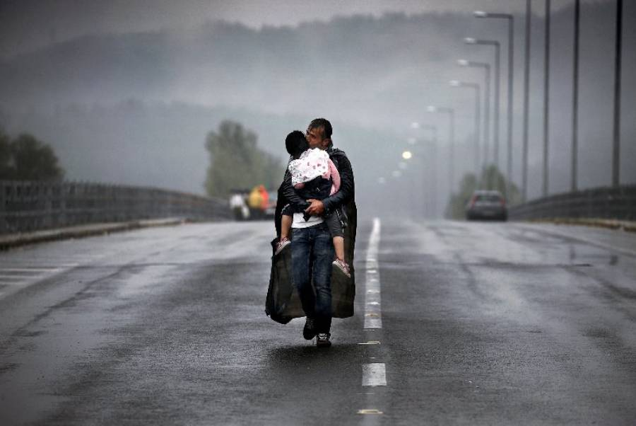
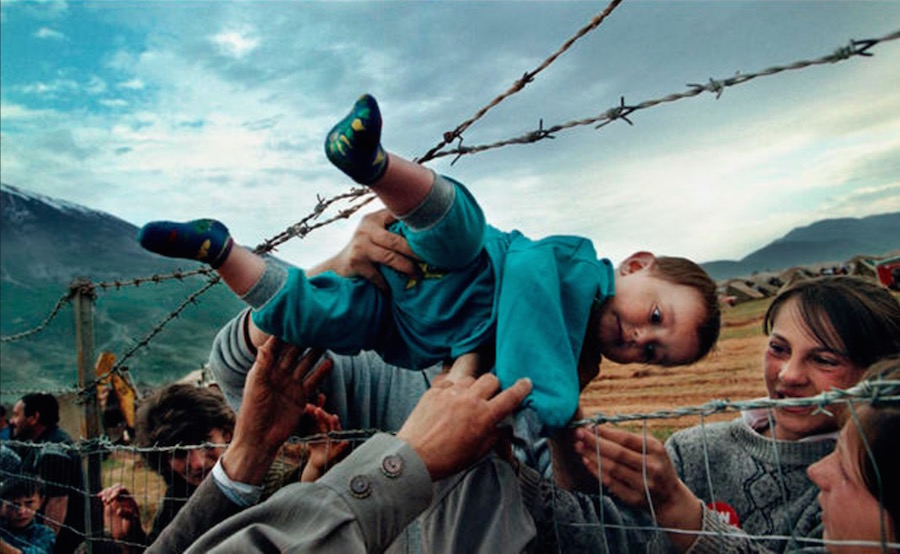
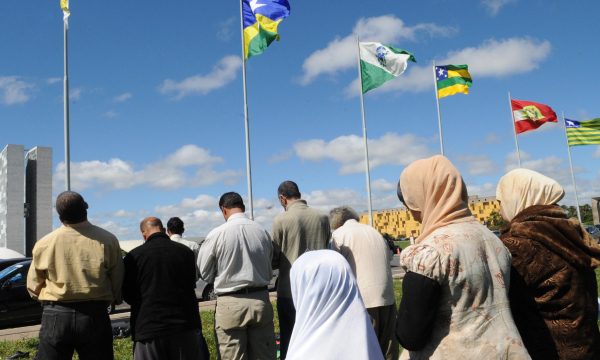
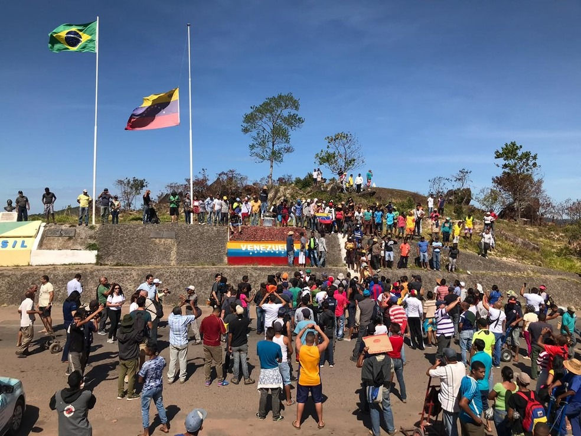

O que é ser refugiado
Ser refugiado significa ser uma pessoa que foge de seu país de origem devido a perseguição, conflitos armados, violações de direitos humanos ou catástrofes naturais.
Refugiados são protegidos pelo direito internacional e têm o direito de buscar refúgio em outro país. Eles não podem retornar ao seu país devido a temores fundamentados de perseguição.
Os refugiados têm direitos e proteções específicas, conforme estabelecido pela Convenção das Nações Unidas sobre Refugiados.
Direitos dos refugiados
Os direitos dos refugiados são protegidos pela legislação internacional de direitos humanos, incluindo a Declaração Universal dos Direitos Humanos e a Convenção das Nações Unidas sobre Refugiados. Alguns dos direitos fundamentais incluem:
- Direito à vida e à segurança pessoal
- Direito à não ser submetido a tortura, tratamento cruel, desumano ou degradante
- Direito à liberdade de pensamento, de religião e de expressão
- Direito à educação e acesso a cuidados de saúde
- Direito ao trabalho e a condições de trabalho justas
- Direito à proteção contra a deportação forçada ao país de origem
- Direito a solicitar asilo e ter uma avaliação justa de seu caso
Papel do Brasil enquanto refúgio
O Brasil tem desempenhado um papel significativo como país de refúgio para pessoas que buscam proteção internacional. Ao longo dos anos, o país tem acolhido refugiados de várias partes do mundo, incluindo países da América do Sul, África, Oriente Médio e Ásia.
O Brasil é signatário da Convenção das Nações Unidas sobre Refugiados e possui leis e políticas para garantir a proteção dos refugiados. O país possui um sistema de asilo e um Comitê Nacional para os Refugiados (CONARE) responsável por analisar os pedidos de refúgio.
Além disso, o Brasil também tem implementado programas de integração e assistência aos refugiados, oferecendo acesso a serviços básicos, como saúde e educação, e promovendo a inclusão social e econômica dos refugiados.
Causas e consequências das migrações ao Brasil
As migrações para o Brasil podem ser motivadas por uma variedade de fatores. Alguns dos principais impulsionadores das migrações atuais incluem:
- Conflitos armados: Migrações causadas por guerras, instabilidade política e violência em países de origem
- Perseguição: Migração de pessoas que fogem de perseguição política, étnica, religiosa ou de gênero
- Crises humanitárias: Migrações causadas por desastres naturais, como terremotos, furacões e enchentes
- Busca por melhores condições de vida: Migrações motivadas pela busca de melhores oportunidades de emprego, educação e qualidade de vida
As migrações têm várias consequências para o Brasil, incluindo desafios e oportunidades. Alguns dos impactos são:
- Impacto social e cultural: A chegada de migrantes pode enriquecer a diversidade cultural do país, trazendo novas perspectivas e contribuições para a sociedade
- Desafios econômicos: A integração dos migrantes pode apresentar desafios, como a busca por emprego e acesso a serviços. No entanto, os migrantes também podem contribuir para a economia por meio de sua força de trabalho e empreendedorismo
- Pressão sobre os serviços públicos: O aumento da chegada de migrantes pode exercer pressão sobre os serviços públicos, como saúde, educação e habitação, exigindo investimentos e políticas adequadas
Mapas interativos 🌎

Tradução:
Título: "Populações Totais de Imigrantes e Emigrantes por País, Estimativas de meados de 2020"
Legenda: "Mais azul: mais imigrantes; Mais vermelho: mais emigrantes."

Tradução:
Título do mapa: "Fluxo líquido de migrantes por país, 1950-2020 (por intervalos de cinco anos)"; Título da tabela: "Brasil".
Legenda do mapa: "Número líquido de migrantes"; Eixo vertical da tabela: em mil (K).
Fontes
- O que é ser refugiado: https://mundoeducacao.uol.com.br/curiosidades/o-que-e-um-refugiado.htm
- Direitos dos refugiados: vivendobauru.com.br
- Papel do Brasil enquanto refúgio: https://www.gov.br/mdh/pt-br/assuntos/noticias/2018/junho/os-refugiados-e-os-direitos-humanos
- Causas e consequências: https://pt.scribd.com/doc/125822472/Causas-e-consequencias-dos-refugiados-docx